This project is an end to end machine learning and MLOps system designed to predict residential crime risk using CPTED, or Crime Prevention Through Environmental Design, concepts. I built the workflow around large scale PySpark modeling and production style deployment so that the model could move beyond notebook experimentation into an automated and scalable serving pipeline for insurance related decision support.
The main goal was to operationalize crime risk prediction in a way that supports real world usage. Instead of stopping at training a model, I wanted to build a complete system that could process structured crime related inputs, generate risk predictions, and deploy those predictions through a repeatable CI/CD workflow. In the final design, insurance agents could use the system to estimate residential crime risk and recommend appropriate home insurance products. :contentReference[oaicite:2]{index=2}
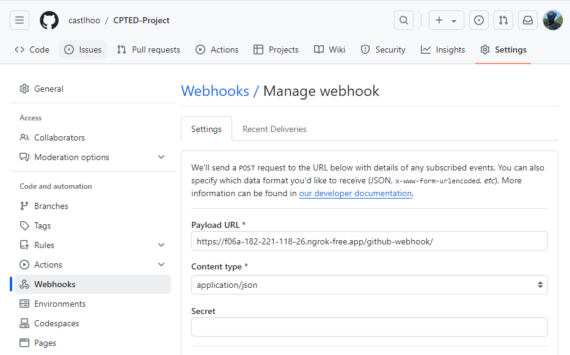
This image summarizes the core technologies I used in the project. GitHub served as the source control layer, PySpark handled large scale model development, Jenkins automated CI/CD tasks, Docker provided a reproducible runtime environment, and Kubernetes enabled scalable deployment. The project was intentionally structured as a production oriented ML system rather than a standalone modeling exercise.
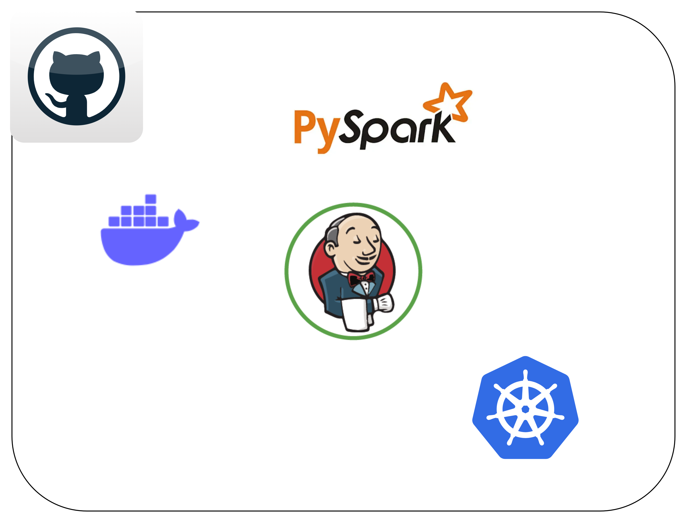
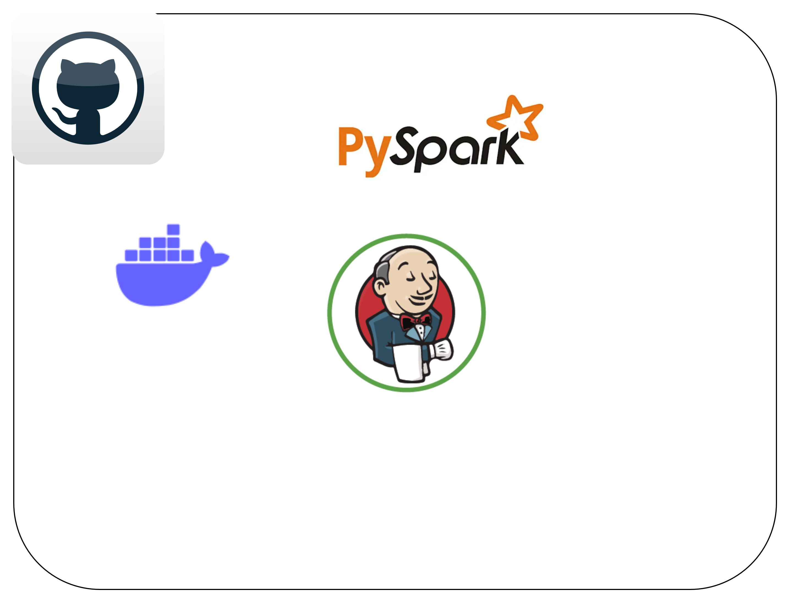
These diagrams show the full system flow. Code changes are pushed to GitHub, Jenkins is triggered through webhook integration, Docker images are built and pushed to Docker Hub, and the containerized application is deployed to Kubernetes. This architecture was designed to automate the full path from model update to production release, reducing manual deployment work and improving consistency across runs.
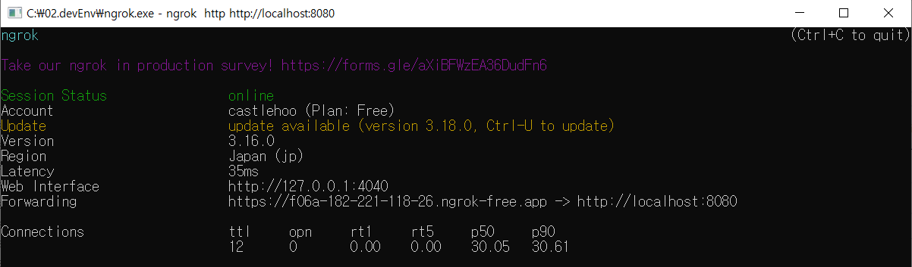
The model uses CPTED related inputs such as Accessibility, Surveillance, and Crime Count to predict a Risk Score for each apartment or residential location. I framed these as structured features for supervised learning, where higher risk scores indicate greater crime vulnerability. The dataset preparation and prediction setup were implemented with PySpark so the workflow could scale more naturally than a small local script based pipeline. :contentReference[oaicite:5]{index=5}
In the modeling code, I created a Spark session, loaded the training CSV, selected the required columns, adjusted risk score values where needed, assembled feature vectors, and trained a Random Forest based pipeline. I then loaded test data and generated predictions using the trained pipeline model, which made the workflow reusable for both training and inference. :contentReference[oaicite:6]{index=6}
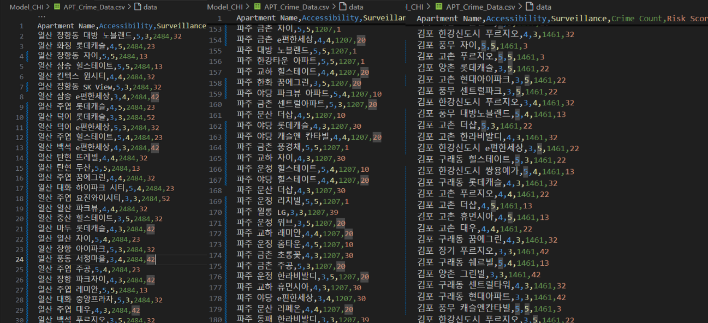
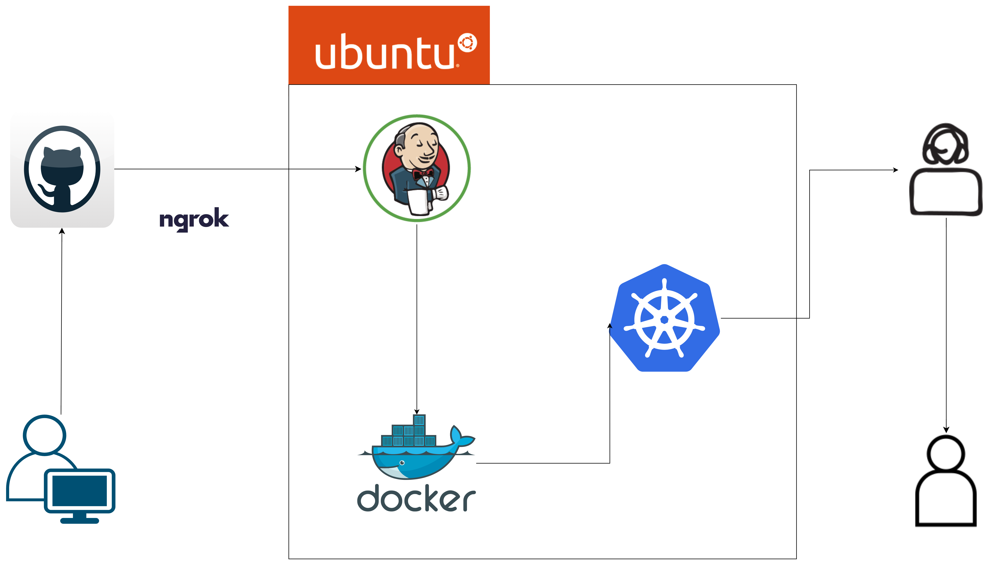
These screenshots show how I connected GitHub and Jenkins through webhook automation. Because Jenkins was running in a local environment, I used ngrok to expose a public tunnel and configured GitHub webhooks to send build events to the Jenkins endpoint. This allowed code pushes to trigger the pipeline automatically, which is a key step in building a real CI workflow rather than manually running deployments.
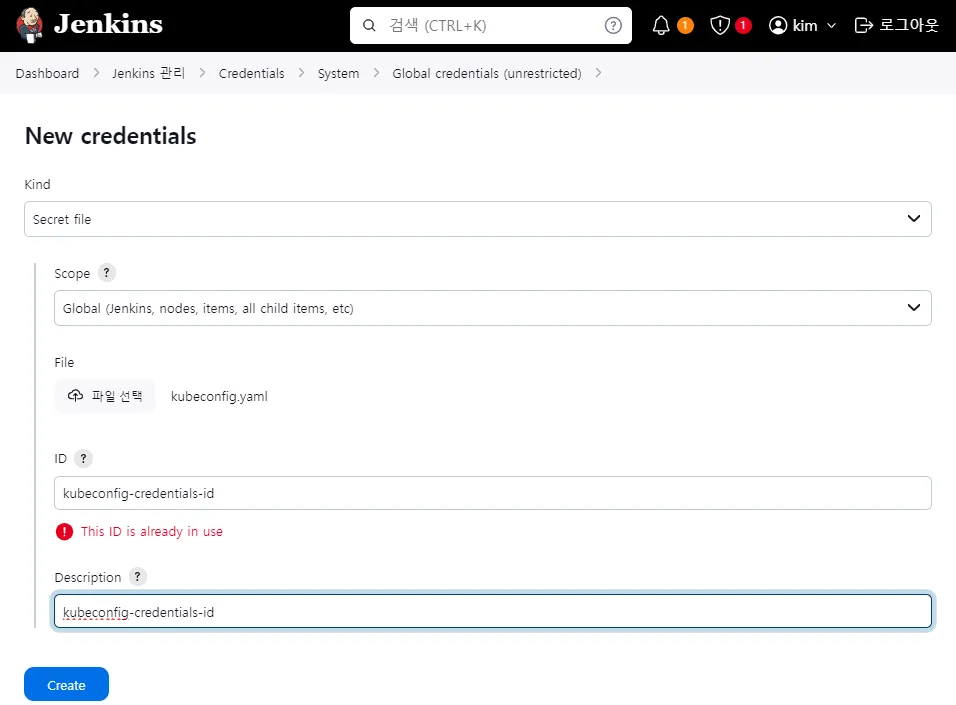
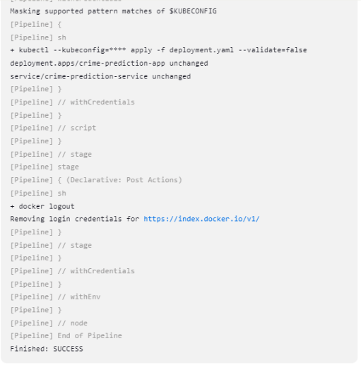
After Jenkins detected a change, it built a Docker image for the PySpark prediction service and pushed the image to Docker Hub. These screenshots show both the target repository and a successful push result from the pipeline log. This step was critical because it turned the model runtime into a portable artifact that could be consistently deployed in the Kubernetes environment.
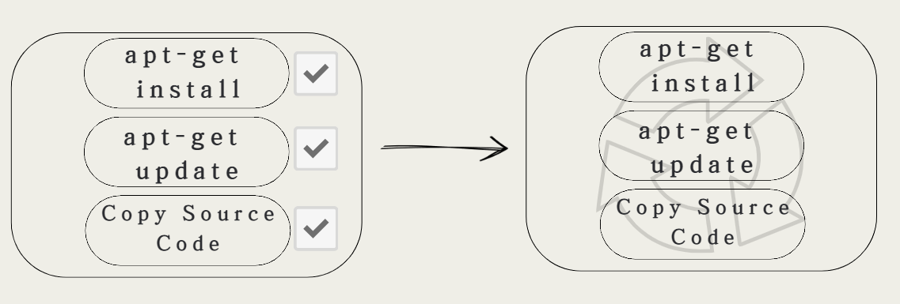
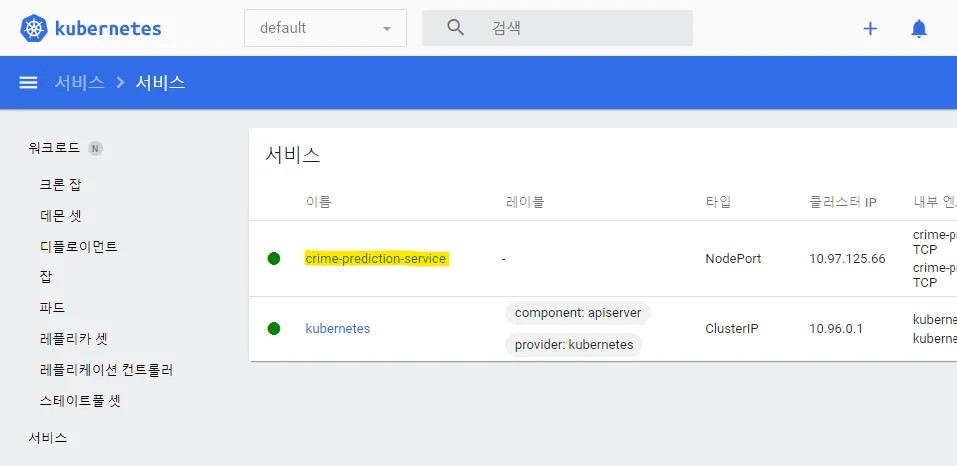
I also focused on optimizing the image build process. These images represent the two main optimization ideas I applied. First, multi stage Docker builds help separate build dependencies from runtime dependencies, which reduces the final image size. Second, Docker layer caching reuses unchanged build layers, which lowers rebuild time for repeated pipeline executions. Both ideas were used to make the deployment pipeline faster and more efficient. :contentReference[oaicite:9]{index=9}
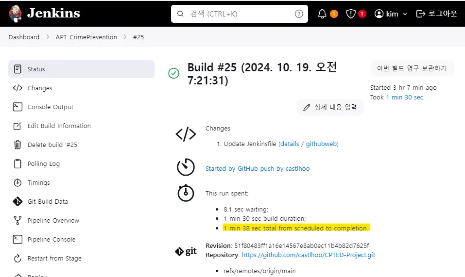
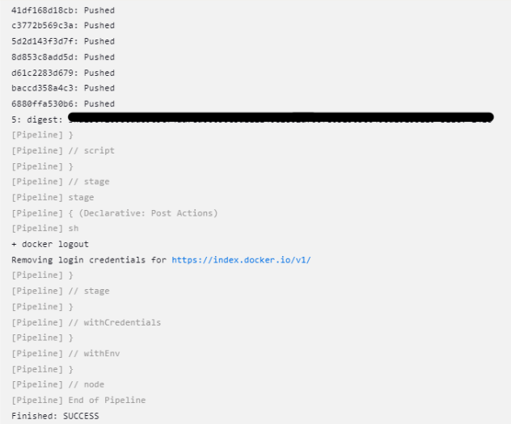
These screenshots highlight the deployment automation side of the project. Jenkins was responsible not only for build and push steps, but also for handling credentials securely and executing deployment steps into Kubernetes. I stored the Kubernetes access configuration as Jenkins credentials and referenced that credential during deployment, which is much closer to how production CI/CD systems manage sensitive infrastructure access.
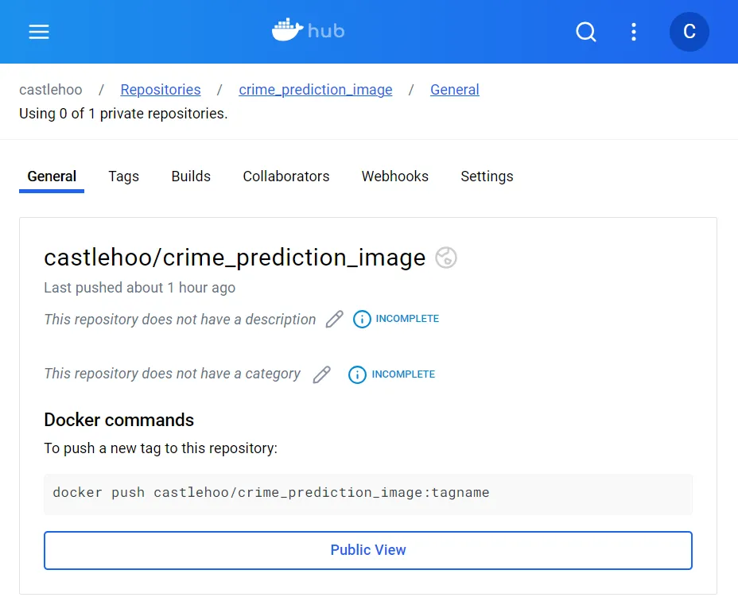
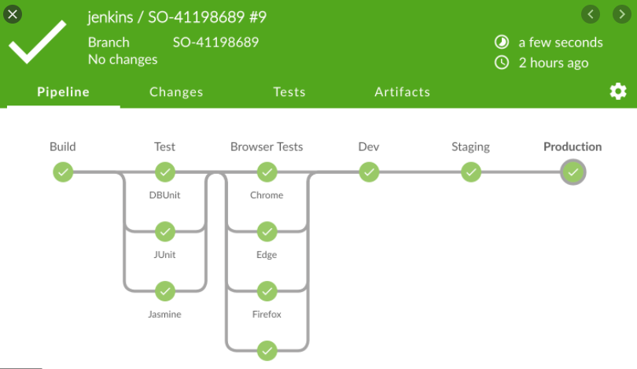
These images show the final deployment stage. Jenkins used kubectl with the stored kubeconfig to apply the deployment configuration, and the logs show a successful apply result. The Kubernetes dashboard confirms that the service was created and exposed as `crime-prediction-service`, which demonstrates that the model had been promoted from a build artifact into a running cluster service.
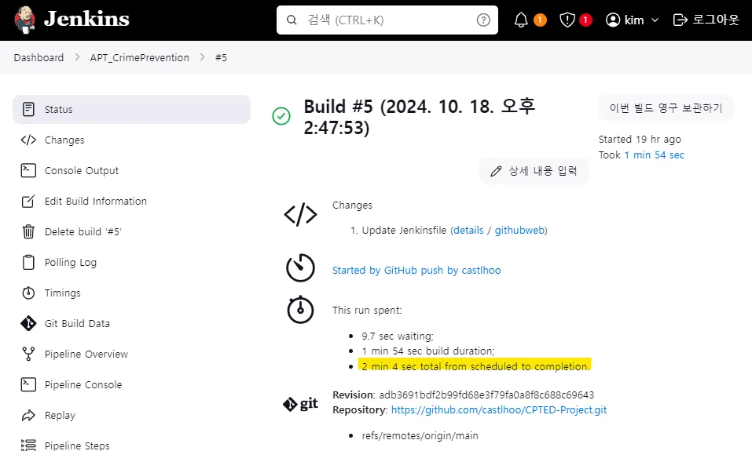
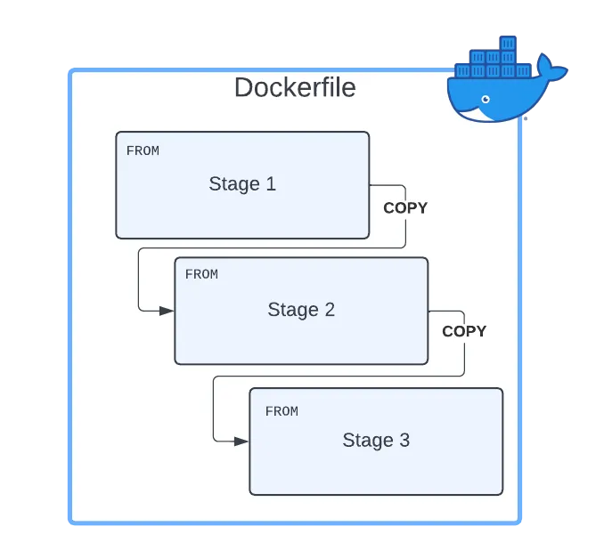
These screenshots show the measurable impact of the optimization work. Before optimization, the total deployment pipeline took about 2 minutes and 4 seconds. After applying the improved build strategy, the total time dropped to about 1 minute and 38 seconds. This reduction of roughly 30 seconds matters because repeated CI/CD runs compound quickly, especially when working with containerized ML systems and larger datasets.
The final outcome was a complete ML production pipeline that starts from GitHub code updates and ends with a deployed Kubernetes service. From a machine learning perspective, the project demonstrated how CPTED based structured features can be used for residential crime risk prediction. From an engineering perspective, it showed that I can connect model development with CI/CD, containerization, orchestration, and deployment optimization in a single end to end workflow.
This project best represents my AI Engineer and Data Engineer side because it goes beyond model training and focuses on production readiness. It shows that I can build systems where machine learning, infrastructure, automation, and deployment are tightly connected. That is the kind of work I want to continue doing in roles that sit between applied AI, data systems, and real world product delivery.